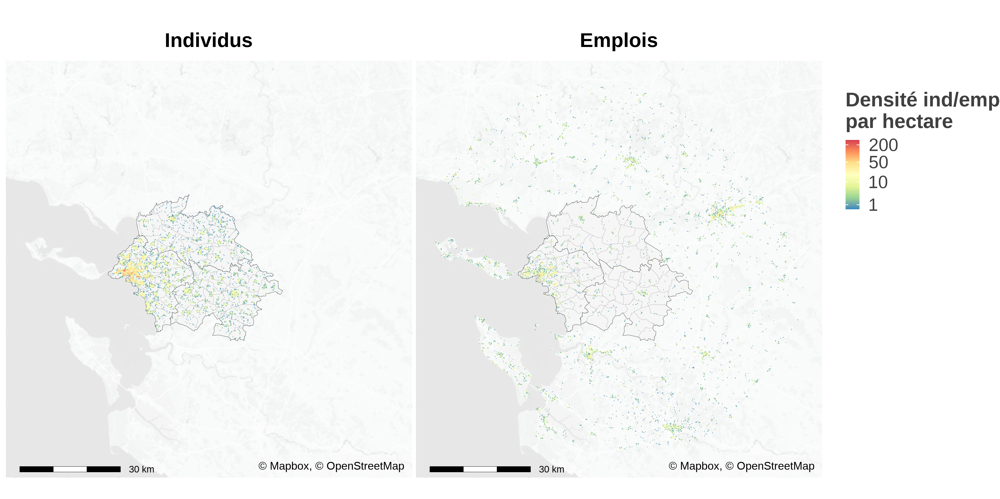
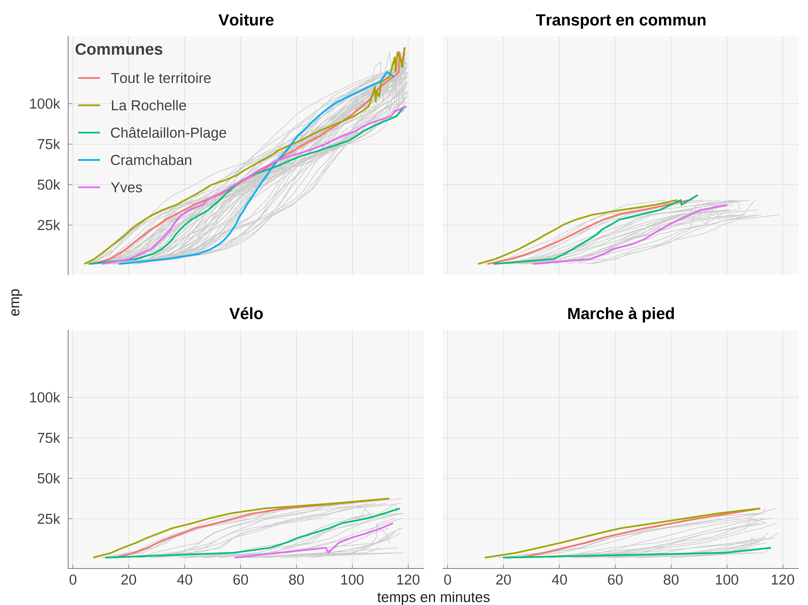
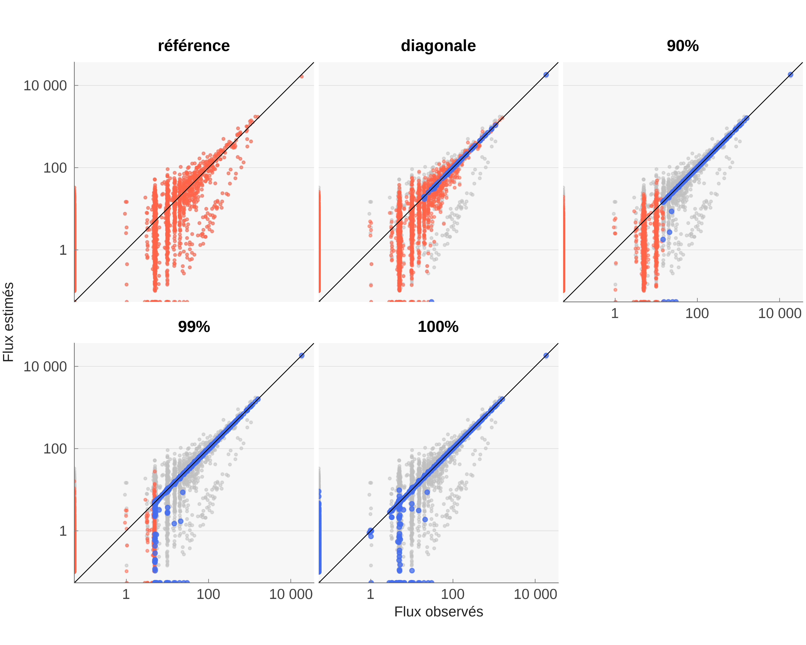

3 Application à la Rochelle
3.1 Une application à l’agglomération de La Rochelle
Nous proposons ici une première application de MEAPS à l’agglomération de la Rochelle. Cette application est issue d’un travail de quantification de scénarios de politiques publiques visant à réduire l’empreinte carbone associée aux mobilités quotidiennes et au secteur résidentiel. La quantification demande à la fois de produire une cartographie très fine des émissions, en procédant par interpolation à partir de données plus macroscopiques mesurées par ailleurs et d’être en mesure de produire des évaluations des différences d’émissions localement et à l’échelle du territoire selon les différents scénarios. Nous présentons ici deux familles de scénarios pour lesquelles MEAPS a été mobilisé :
Des scénarios de localisation de l’emploi : nous projetons la distribution des trajets en utilisant MEAPS sur deux structures spatiales de l’emploi différentes, tout en conservant la même quantité d’emploi globale. La différence entre les kilomètres parcourus suivant les différents modes dans les deux scénarios permet d’évaluer l’impact de la localisation, en distinguant la contribution du changement modal, la contribution des changements de distance pure (à mode et flux carreaux à carreaux inchangés) et la contribution des changements de flux.
Des scénarios de modification de la structure du réseau de transport. Le principe est identique à celui pour la localisation de l’emploi. C’est la matrice des distances et des temps qui est modifiée par une modification des infrastructures de transports (par exemple une ligne de bus en plus). Cette matrice de distance différente induit des temps de trajet plus petits mais uniquement pour le mode transport en commun. Elle induit un changement modal (plus de transport en commun, moins des autres modes) et enfin conduit à un changement des rangs des opportunités et donc une redistribution des flux de carreau à carreau.
Dans les deux familles de scénarios, les simulations par MEAPS permettent de construire un contrefactuel et des alternatives à un niveau fin, croisant la localisation au carreau 200m pour les résidences (5 456 carreaux pour la Rochelle et le périmètre du SCOT) et les opportunités (6 326 carreaux dans le périmètre de 33km autour de l’agglomération de la Rochelle), soit 34,5 millions de flux et de modes. L’agrégation de ces informations est alors possible à des niveaux plus généraux pour analyser les impacts. La conversion des kilomètres ou des minutes en émissions de CO2 pour la voiture est faite en appliquant des coefficients de conversion conventionnels, ce qui permet d’étendre les indicateurs au champ des émissions de gaz à effet de serre.
3.1.1 Emplois, résidents au carreau Inspire 200m
La carte de la zone considéré est représentée sur la figure 3.1. L’analyse est limitée aux résidents du périmètre du Schéma de COhérence Territoriale (SCOT) et considère les emplois dans un rayon 33 kilomètres autour de lieux de résidence. Cette carte est construite à partir des données carroyées de l’INSEE INSEE (2022b) à la résolution du carreau 200m Inspire1. Nous ajoutons à ces données la localisation de l’emploi sur la même grille en utilisant les fichiers fonciers et les données d’emplois localisés de INSEE (2022a). La méthode consiste à imputer par code NAF les emplois de chaque commune selon INSEE (2022a) aux surfaces professionnelles à la parcelle issues des fichiers fonciers. Cela permet ensuite de localiser au carreau 200m les emplois. Cette méthode est assez grossière, puisqu’en particulier la ratio personne/surface n’est pas constant d’une entreprise à l’autre, mais elle fournit une bonne première approximation d’autant que l’extrapolation ne dépasse pas l’échelle de la commune. Elle est en tout cas très supérieure à une imputation uniforme.
1 INfrastructure for SPatial InfoRmation in Europe est depuis 2007 une directive pour la production de données spatialisées. Inspire définit une grille de carroyage et son système de projection harmonisée. C’est ce qui suit l’INSEE dans la diffusion des données carroyées. Voir https://inspire-geoportal.ec.europa.eu pour la définition de la grille et des jeux de données.

3.1.2 Calcul des distances par mode
Un ingrédient important de l’analyse du territoire est la prise en compte des distances entre chaque paire possible résidence/emploi. Contrairement à l’analyse synthétique, nous ne nous contentons pas de la distance euclidienne.
Pour ce faire nous calculons à partir d’un calculateur d’itinéraire (R5 de Conveyal (Conway, Byrd, et Linden 2017; Conway, Byrd, et Van Eggermond 2018; Conway et Stewart 2019) en utilisant le package R5R (Pereira et al. 2021) les distances et surtout les temps de transport pour quatre modes (voiture, vélo, transport en commun, marche à pied). Les temps de transport calculés pour chaque paire de carreaux de résidence et d’emploi, en retenant le centre des carreaux, tiennent compte des différentes contraintes de circulation (vitesses limites pour la voiture, sens de circulation, pénalité pour changement de direction, accès autorisé ou restreint suivant le mode, stress à vélo). Concernant les déplacements en voiture, nous ne prenons pas en compte à ce stade la congestion. Concernant les transports en commun, le niveau de détail est assez grand, puisque les fréquences de voyages ainsi que les correspondances sont prises en compte. Dans certaines villes, il est possible d’accéder à une information sur les temps de parcours effectifs (mesurant ainsi la congestion ou la disponibilité du réseau) en complément des horaires théoriques. Ces informations ne sont pas disponible pour l’agglomération de la Rochelle et donc cette possibilité n’est pas explorée. L’accès aux données GTFS impose quelques limites, comme par exemple la non prise en compte des réseaux scolaires ou d’autres réseaux locaux ou privés non publiés sous ce format. La modification du réseau de transport comme l’ouverture d’une ligne ou l’accroissement de fréquence est pris en compte en modifiant la matrice des distances et temps par mode entre chaque carreau de résidence et chaque carreau de destination. Dans le cas de l’agglomération de la Rochelle, le nombre de paires calculés est de l’ordre de 16 millions.
A partir des temps de trajets par mode, nous appliquons un modèle de choix discret, Random Utility Model (RUM) à la McFadden, estimé sur l’enquête mobilité des personnes 2019 SDES (2021) en utilisant les données de mobilités professionnelles INSEE (2022a) pour caler les flux commune à commune. L’estimation de ce modèle est détaillée dans un autre document (référence à insérer).
Les distances entre chaque paire de cases permettent de calculer un indicateur d’accessibilité qui joue un rôle central dans le modèle radiatif, et donc dans MEAPS, en remplaçant la distance par la somme des opportunités en deçà d’un seuil de temps. La carte de la figure 3.2 représente les temps pour accéder à 10 000 emplois en utilisant différents modes de transport.

Les courbes d’accessibilité de la figure 3.3 sont construite en prenant la moyenne par commune de résidence des temps d’accès pour les différents seuils d’emplois. C’est cette courbe qui découle du modèle théorique présenté plus haut (Section 1.3) et qui détermine les choix individuels de déplacement comme de localisation. Ces courbes font apparaître une propriété propre aux villes littorales : si pour des temps courts ou des moyens de transport peu rapide, l’accès à l’emploi pour des temps courts est maximal à la Rochelle, en revanche, d’autres communes jouissent d’une position plus centrale lorsqu’on accepte des temps de trajets supérieurs à 30 minutes en voiture.

3.1.3 Ajustement de MEAPS sur MOBPRO
La construction de la matrice de distance permet d’utiliser MEAPS pour déduire les flux carreau à carreau. Mais le fichier détail du recensement et son volet mobilités professionnelles nous donnent une information supplémentaire que nous pouvons utiliser pour calibrer au plus près des données MEAPS. Les mobilités professionnelles décrivent pour chaque paire de commune résidence-emploi les flux de mobilités professionnelles (de nombreuses paires de communes ont des flux nuls). Cette information est équivalente à celle produite par MEAPS mais agrégée au niveau communal. Une première stratégie de calage de MEAPS est d’affecter aux probabilités d’absorption un facteur correcteur pour reproduire le plus fidèlement possible les flux agrégés de INSEE (2022a). Cette approche permet ensuite d’utiliser MEAPS sur les données INSEE (2022a) pour réaliser une interpolation infra-communale des déplacements, au carreau 200m. En accédant à ce niveau de détail, nous pouvons ensuite mobiliser la méthode de calcul des distances et des temps de trajets à une échelle fine pour produire des différences au carreau 200m. Dans une autre approche, plus parcimonieuse, on pourrait limiter le nombre de paramètres estimés pour MEAPS, afin d’une apprécier la qualité prédictive et le comparer à une autre approche. Nous détaillerons cette autre approche dans un futur document.
La modification des probabilités d’absorption est faite par l’ajout d’un facteur correcteur exprimé en “chance”, c’est-à-dire que la probabilité modifiée l’est par la formule suivante où \omicron_{i,j} est un nombre entre 0 et +\infty et i,j indexent les communes de départ et d’arrivée avec c_a = p_a/(1-p_a) :
\tilde{p}_a = \frac{c_a \times \omicron_{i,j}} {1+c_a \times \omicron_{i,j}} \tag{3.1}
A ce stade nous utilisons un algorithme naïf pour trouver une solution au problème posé. Nous calculons l’odd-ratio entre le résultat d’une simulation associée à un ensemble d’\omicron_{i,j} et celui défini par les données observées de INSEE (2022a) en utilisant la formule suivante où \beta est un paramètre d’amortissement inférieur à 1 et positif et k indexe les itérations :
\omicron^k_{i,j} = (\frac{\tilde{p}^k_a/(1-\tilde{p}^k_a)}{ p^{mobpro}_a/(1-p^{mobpro}_a)})^\beta \times \omicron^{k-1}_{i,j} \tag{3.2}
Nous modifions alors les \omicron_{i,j} en fonction des écarts observés. Cela conduit à chercher un point fixe. Nous calculons ensuite un critère d’ajustement à partir de l’entropie relative de Kullback-Leibler (Kullback et Leibler 1951). L’entropie relative est définie pour deux distributions de probabilités p et q comme suit (dans le cas discret, le cas continu se généralise aisément) :
KL(p,q) = \sum_{i}p_i \times log(p_i/q_i) \tag{3.3}
Cette mesure ressemble à une distance, mais n’est pas symétrique et ne vérifie pas l’inégalité triangulaire. Elle s’interprète dans le cadre de la théorie de l’information comme la quantité relative d’information supplémentaire nécessaire pour exprimer q à partir de p. En suivant Colin Cameron et Windmeijer (1997) on peut construire une mesure de la qualité de l’ajustement R_{KL}^2 de la façon suivante, où \hat{q} et q_0 sont deux distributions respectivement estimée et de référence que l’on compare à p :
R_{KL}^2 = 1 - \frac{KL(p,\hat{q})}{KL(p, q_0)} \tag{3.4}
La distribution de référence est choisie comme une distribution uniforme, par analogie avec le calcul de la variance dans un R^2 habituel où l’on régresse sur une constante. On écrit :
\begin{aligned} KL(p,q_{ref}) &{}= \sum_{i}p_i \times log(p_i/unif) \\&{}= \sum_i p_i \times log(p_i) + log(N) \end{aligned} \tag{3.5}
qui n’est autre que l’entropie de la distribution p à une constante près (N est le nombre de résidents actifs ou d’emplois).
L’algorithme employé devra être affiné dans le futur afin de permettre une descente de gradient qui permet de minimiser l’entropie relative. L’algorithme naïf permet de réduire cette entropie relative sans assurer qu’elle est minimale. Nous utiliserons l’algorithme naïf pour explorer la possibilité d’ajuster MEAPS sur un jeu de données. Cet algorithme a été utilisé avec différentes contraintes sur les paramètres. Le tableau 3.1 indique la qualité de l’ajustement obtenu dans ces différentes configurations. La première est celle où les probabilités d’absorption sont déterminées uniquement par les fuites par commune de résidence. C’est la configuration la plus parcimonieuse en termes de paramètres et qui sert de référence. Le R^2_{KL} vaut 89.1% ce qui est déjà un ajustement élevé. La seconde configuration est celle où l’on ajuste des \omicron_{i,j} uniquement pour les termes diagonaux (i=j). Cette configuration ajuste donc un odd-ratio pour les résidents qui travaillent dans leur commune de résidence. Dans un certain nombre de communes, cet ajustement conduit à augmenter la probabilité d’absorption interne (figure 3.7), ce qui indique que le choix de résidence n’est pas indépendant de celui d’activité. Pour la commune la plus importante (la Rochelle), en revanche, l’odd-ratio \omicron_{17300, 17300} est proche de 1. Les deux configurations suivantes laissent beaucoup plus de degrés de liberté en estimant des \omicron_{i,j} librement. La première de ces deux configurations limite les \omicron_{i,j} estimés à ceux représentant un total cumulé des flux mesurés par INSEE (2022a) égal à 98% ce qui représente un peu moins de 2 000 \omicron_{i,j}. La seconde configuration estime tous les \omicron_{i,j} sans limite (soit 15 120 paramètres pour 72 communes de résidence et 210 communes d’activité).
| N(pf,i) | N(oi,j) | RKL2 | |
|---|---|---|---|
| Fuite par commune de résidence | 72 | 0 | 89.1% |
| Fuite et diagonale | 72 | 72 | 94.3% |
| Fuite et 90% des flux | 72 | 729 | 95.9% |
| Fuite et 99% des flux | 72 | 1 928 | 98.3% |
| Fuite et 100% des flux | 72 | 15 120 | 99.0% |
| L'ajustement de MEAPS est réalisé par l'algorithme décrit dans le texte. Le nombre de paramètres estimés est égal à la somme de la colonne N(pf,i) et de la colonne N(oi,j). | |||
la figure 3.4 représente les flux observés et estimés pour les différentes configurations du tableau 3.1. Le gain à estimer les \omicron_{i,i} diagonaux, pondérant les flux allant d’une commune de résidence vers elle même est assez élevé, faisant passer le R^2_{KL} de 89.1% à 94.3% et réduisant les écarts entre flux observé et flux estimé comme le montrent les deux panneaux supérieurs de la figure 3.4. L’ajout de paramètres supplémentaires ne fait pas gagner beaucoup plus d’autant que les écarts pour les flux marginaux ne sont pas tant réduit que ça. La limite de l’algorithme naïf apparaît ici, puisque le modèle complètement saturé n’ajuste pas totalement la distribution. Différents détails de l’algorithme peuvent l’expliquer, notamment la censure des odd-ratio trop faibles (<0.0001) ou trop importants (>10000) ou la prise en compte des flux nuls. Au-delà de cet argument, il est probable que pour converger vers un ajustement plus strict, il serait nécessaire de calculer la matrice des quasi dérivées des flux par rapport aux \omicron_{i,j}.
Mais le coût peut être très élevé puisque cette matrice (calculée dans la partie synthétique dans un cas simple) est d’une taille considérable (15 120 \times 15 120 coefficients), surtout si l’on prend en compte que le calcul de chaque terme prend quelques dizaine de secondes2.
2 Autour de mille années de vCPU…

Pour les 20 plus grandes communes de l’agglomération de la Rochelle – qui comptent plus de 1 000 résidents en activité – on peut représenter les odd-ratios, construits comme le ratio des chances (p_{a,i,j}/(1-p_{a,i,j})) estimées dans la configuration 100% des flux par rapport aux chances calculées dans le cas où tous les \omicron_{i,j} sont égaux à 1, en fonction de la distance de la commune de destination à la commune de résidence3. Ce diagramme, analogue à un spectre, peut aussi être constuit par commune de destination, la distance d étant la distance aux différentes communes de résidence figure 3.6. L’élément le plus frappant est que les odd-ratios de i à i sont généralement supérieur à 1 (figure 3.5), à l’exception de la commune de la Rochelle. Il n’émerge pas de structure particulière par rapport à la distance, si ce n’est des odd-ratios élevés pour des distances importantes
3 La distance est construite comme la distance moyenne pondérée entre les résidents de la commune de départ et les emplois de la commune d’arrivée. La pondération est le produit des emplois et des résidents pour chaque paire, normalisé à 1.


La figure 3.7 permet de préciser la valeur élevée des odd-ratios pour les flux internes. Les communes où sont localisés de nombreux emplois ont un odd-ratio plutôt plus faible alors qu’ils sont estimés plus élevés dans les communes plus petites et moins desservies. Pour les différentes procédure d’estimation et donc différents nombres de paramètres estimés, on observe une structure similaire dans la répartition géographique des odd-ratio, ce qui suggère que les odd-ratios estimés contiennent de l’information.
Un odd-ratio élevé indique que les flux internes sont plus élevés que dans le scénario de référence. Cela indique probablement un choix de résidence en lien avec l’emploi occupé en privilégiant la commune d’activité pour la résidence (ou l’inverse). Le spectre résident en fonction de la distance indique que ce phénomène, s’il est une hypothèse à très faible distance, ne persiste pas en dehors de la commune de résidence. En revanche, la figure 3.6 suggère que dans certaines communes, notamment Surgères, on observe des odd-ratios supérieurs à 1 pour les des distances faibles, ce qui tend à indiquer que les habitants des communes alentours privilégient Surgères comme lieu d’emploi.
A ce stade, les observations sont limitées par le faible nombre de communes modélisées, mais on peut espérer que l’analyse des odd-ratios estimés pourra servir à caractériser les communes en fonction des choix de résidence et d’emploi. En multipliant cette analyse pour d’autres territoires, l’information apportée par les odd-ratio pourra être inférée. Il sera aussi possible de confronter ces éléments à d’autres variables, comme le prix de l’immobilier, les loyers résidentiels ou commerciaux, la densité d’emploi.
Une autre approche empirique serait de définir une forme fonctionnelle pour les odd-ratio en paramétrant cette forme fonctionnelle de façon parcimonieuse. On pourra alors tester des hypothèses et tenter d’extraire une information de la structure des odd-ratios. Une autre approche est de procéder à une analyse de régression multivariée sur les odd-ratios estimés.

3.1.4 Scénarios “localisation de l’emploi”
Le Schéma de Cohérence Territorial (SCoT) est un document de planification, établi et voté par les élus des communes composant le territoire et soumis à validation de l’État. Il défini, entre autres, des zones de développement économique, urbaines et des espaces naturels. C’est la loi SRU relative à la Solidarité et au Renouvellement Urbains du 13 décembre 2000 qui l’a défini et les contours en ont été modifiés au cours des dernières années.
Le schéma n’est pas qu’indicatif puisqu’il est opposable. En ce qui concerne le développement de l’emploi, la création de zones d’activité est rendue possible par le SCoT, mais la réalisation effective des créations d’emploi et surtout leur localisation nette des déplacements d’autres emplois découle des décisions de l’ensemble des acteurs et donc et donc de causalités diverses et variées. Nous évaluons ici des scénarios comptatible avec le SCoT sans pour autant nous prononcer quant à leur réalisme ou leur probabilité d’occurrence. Ainsi, nous analysons les localisations proposées à emploi total constant, c’est-à-dire vues comme des relocalisations de l’emploi vers les zones d’activités depuis leur localisation actuelle.
La construction de cette analyse impose donc de connaître précisément la localisation de l’emploi, ce que nous réalisons par une imputation au carreau INSPIRE 200m à partir des données d’emploi par commune. Nous calons alors MEAPS sur ces données ainsi que sur les données de mobilité professionnelles issues du recensement4 et publiées par l’INSEE. Ces données donnent les lieux habituels de travail (à la commune) pour les différents résidents (d’une commune) ainsi que les flux correspondant entre paires de communes.
4 https://www.insee.fr/fr/information/2383243
La construction de cette analyse impose donc de connaître précisément la localisation de l’emploi, ce que nous réalisons par une imputation au carreau INSPIRE 200m à partir des données d’emploi par commune. Nous calons alors MEAPS sur ces données ainsi que sur les données de mobilité professionnelles issues du recensement5 et publiées par l’INSEE. Ces données donnent les lieux habituels de travail (à la commune) pour les différents résidents (d’une commune) ainsi que les flux correspondant entre paires de communes.
5 Autour de mille années de vCPU…
- Une fois MEAPS calé sur ces données, nous pouvons analyser des scénarios de déplacement des emplois et en déduire les conséquences en trajets, mode de transport et donc émissions de CO2 associé
3.1.5 Scénarios “transport en commun”
L’analyse du territoire ne repose pas seulement sur la localisation de l’emploi, mais aussi sur une prise en compte détaillée des possibilités de transport.